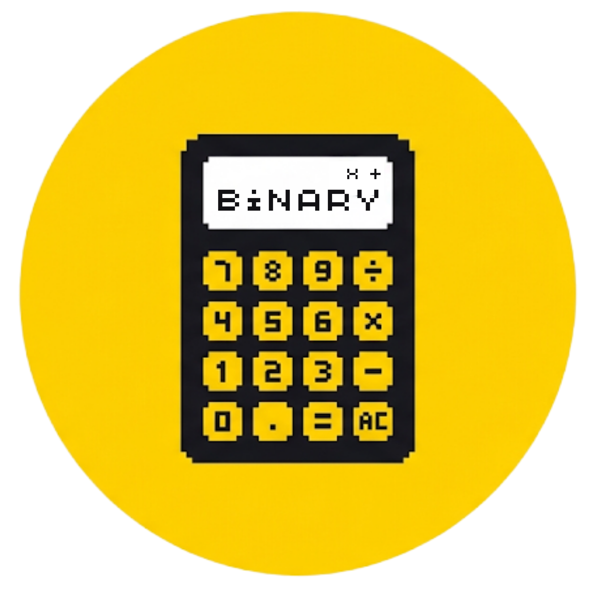

DISPLAY VIRTUAL
7 SEG
0
Bits DIP: [ 0 0 0 0 ]
Origen: sistema

Control remoto · Wokwi ↔ Web · MQTT
El DIP de Wokwi es la entrada real: esta vista refleja en vivo el patrón que llega por MQTT. Con el candado abierto puedes tocar los switches para enviarle un comando (0–9) al ESP32, igual que con el teclado.
Envía el dígito al display físico de Wokwi